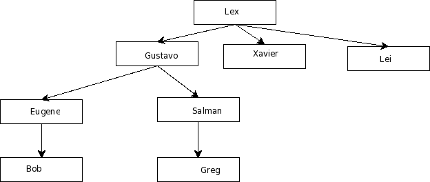

Psqlog allows you to discover information latently present in your existing relational database. Psqlog lets you use the familiar and widely-available SQL query language to discover this information. The information latently present refers to the logical relationships that you specify between rows and columns in your database.
Psqlog is intended to be a practical extension of PostgreSQL rather than a language in itself. That is, its most natural application is to analyze existing PostgreSQL databases, rather than being used as a dialect of Prolog.
Suppose you are keeping track of who reports to who in an organization. The organization's reporting structure can be represented graphically as:
It is evident from the chart that Eugene reports to Gustavo, and that Gustavo reports to Lex.
Now suppose your database stores these direct reporting relationships. That is, you can query your database to know directly reports to who. However, you would also like to know all of the subordinates of a given person. That is, you'd like to know that not only does Bob reports to Eugene, but that Bob also reports to Gustavo, and to Lex as well. In other words, you'd like to know who all of the superiors of a given employee are, not just his or her direct superior.
The reasoning is more formally expressed by the following two rules:
A is a superior of B if:
Psqlog gives you the ability to express these rules, such as 1) and 2) above, in your database, and to then make queries in the familiar form of SQL.
We store the information shown in the above diagram in a conventional, normalized table form as:
company=# \d employee
Table "public.employee"
Column | Type | Modifiers
--------------+------------------------+-----------------------------------
employee_id | integer | not null default nextval
('employee_sequence'::regclass)
name | character varying(256) |
Indexes:
"employee_pkey" PRIMARY KEY, btree (employee_id)
company=# \d management;
Table "public.management"
Column | Type | Modifiers
---------------+---------+------------------------------------------
management_id | integer | not null default nextval
('management_sequence'::regclass)
manager | integer |
managed | integer |
Indexes:
"management_pkey" PRIMARY KEY, btree (management_id)
Foreign-key constraints:
"management_managed_fkey"
FOREIGN KEY (managed) REFERENCES employee(employee_id)
"management_manager_fkey"
FOREIGN KEY (manager) REFERENCES employee(employee_id)
The above org chart would be added to the database by INSERTs such as the following:
company=# INSERT into employee (name) VALUES ('Eugene');
company=# INSERT into employee (name) VALUES ('Bob');
company=# INSERT into management (manager, managed) VALUES
company=# SELECT employee_id FROM employee WHERE name='Eugene';
employee_id
-------------
4
(1 row)
company=# SELECT id FROM employee WHERE name='Bob'
employee_id
-------------
8
(1 row)
company=# INSERT INTO management (manager, managed) VALUES (4,8);
Now, we can query the database after loading this database with Psqlog functionality:
-- who's Lex the boss of?
company=# SELECT unify_arg1 AS A, unify_arg2 AS B FROM
unify2( 'superior' , 'A' , 'B' , 'Lex',NULL );
a | b
-----+---------
Lex | Bob
Lex | Greg
Lex | Eugene
Lex | Salman
Lex | Gustavo
Lex | Lei
Lex | Xavier
(7 rows)
-- who are Bob's bosses?
SELECT unify_arg1 AS A, unify_arg2 AS B FROM
unify2( 'superior' , 'A' , 'B' , NULL,'Bob' );
a | b
---------+-----
Gustavo | Bob
Lex | Bob
Eugene | Bob
(3 rows)
-- does Bob work for Gustavo? (yes)
SELECT unify_arg1 AS A, unify_arg2 AS B FROM
unify2( 'superior' , 'A' , 'B' ,
'Gustavo','Bob' );
a | b
---------+-----
Gustavo | Bob
(1 row)
-- does Greg work for Eugene? (no)
SELECT unify_arg1 AS A, unify_arg2 AS B FROM
unify2( 'superior' , 'A' , 'B' ,
'Greg','Eugene' );
a | b
---+---
(0 rows)
Psqlog currently makes use of temporary tables that it must update. This is overly expensive: instead, future versions of Psqlog will make use of in-memory data structures, which will likely be represented as SQL SELECTs (of constants rather than tables).